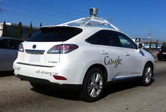

Autonomous Vehicle
An autonomous car is a vehicle that is capable of sensing its environment and navigating without human input. Many such vehicles are being developed, but as of February 2017 automated cars permitted on public roads are not yet fully autonomous. They all require a human driver at the wheel who is ready at a moment's notice to take control of the vehicle.
The UK’s automotive industry has been growing strongly in recent years, bucking the trend seen in other EU countries with production up to 1.6 million vehicles in 2014 and forecast to rise to 2.0 million vehicles in 2018
The UK has a proud history of automotive innovation with significant research centres and R&D investment of £1.7 billion in 2013. Today in the UK, connected and autonomous vehicles are being developed and tested on UK roads in Bristol, Coventry, Greenwich and Milton Keynes. Other EU countries need legislative changes to conduct such tests.

There are many adjacent sectors which will be impacted by connected and autonomous vehicles including insurance, telecommunications, electronics, technology, IT, transportation, logistics, advertising, digital and retail.
In many of these sectors the UK has a leading position. The purpose of this study is to assess the impact of connected and autonomous vehicles on the UK economy. The study was commissioned by the Society of Motor Manufacturers and Traders (SMMT) and prepared by KPMG LLP. Our study comprised the following: • Desktop research and analysis of publicly available information, academic and industry studies and forecasts (including publications available to purchase). Specific sources have been listed in the body of the report